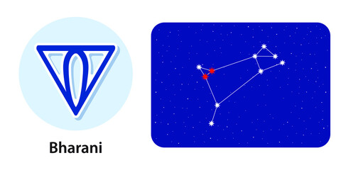

Nakshatra Bharani
Bharani Nakshatra
Characteristics male
Even if not much appreciated by others, a Bharani male only has good intentions in his heart for others and will never hurt someone consciously. The male has a general tendency to always listen to his conscience, which may backfire at times. It is in his nature to speak his mind and tell the truth, and that’s what people dislike about him. Although he tries to express his true feelings, he is often a target of misunderstanding. A Bharani male has a very forgiving heart, so if he is ever made upset, all one needs to do is apologise with sincerity, and he will forgive him in a heartbeat.Profession male
One can never say what is the right or auspicious career option for a Bharani male. He is someone who can be trusted with any kind of job, be it arts, music, media, sports, or business. Although, a Bharani male should try and dabble in the business of tobacco, as he can see the most success in it. He can expect a positive shift in his situation after the age of 33. Though his career will thrive in any corner of the earth, following his profession on the eastern side of his home will be the best choice.Compatibility male
Family is the most important thing for the male born in Bharani Nakshatra, and he loves his family unconditionally. The extent of devotion to his family is sometimes the reason for ridicule by them, and unfortunately, a Bharani male misses out on his father’s love. His maternal uncles are usually the source of support for them, and his friends are always there for him. Bharani males usually get married around the age of 27 to 32 and are more apparent of having a male child.Health male
A Bharani male is generally a very healthy person and is barely ever ill, even if he doesn’t take much care of himself. Although as he gets older, health issues like diabetes, malaria, apoplexy, or dental problems may occur. Bharani male is not foodie, and is more the kind who eats to survive.Characteristics female
Although bold and outgoing in nature, females belonging to the Bharani Nakshatra are mostly very respectful to their parents and elders. They have a very pure personality and are very innocent. They have a natural charm to them; that makes people want to stay around them. What sets them aside from the rest is that even if they have a very modest character, they are usually very independent and like to follow their heart. One never has to worry about taking care of a Bharani female as they can do that themselves and won’t heed other people’s judgement.Profession female
As mentioned above, a Bharani female is an independent and career-driven person. She is the kind of person who sought out opportunities without waiting for them to arrive, which makes them a good businesswoman. Any job is suitable for them as they are very passionate about their career, but their charming nature makes them ideal for a sales job or a tourist guide. Sports is also a good field for them.Compatibility female
A Bharani female will be fortunate in finding a very loving and caring partner and is more probable of having a happy married life. There might arise some conflicts between her and her in-laws due to her headstrong nature, but they are not that big to be of concern. The female of this nakshatra is generally the dominant figure in the relationship but she will always have the trust and loyalty of her spouse.Health female
These females are more likely to have a generally healthy life and won’t have to be worried about health issues. But as time goes on, they might face problems such as menstrual or uterus issues. They should also be wary of tuberculosis as it might cause problems in the future.Bharani Nakshatra Padas
Pada 1st: The first pada of Bharani nakshatra lies in the Leo navamsa and is dominated by the sun. A person belonging to this pada tends to be extremely creative and is very in tune with their artistic nature, and seems to be self-absorbed in themselves. This may seem unpleasant to others.
Pada 2nd: The second pada of this nakshatra lies in the Virgo navamsa and is dominated by mercury. One born in this pada can achieve anything if they are focused on their goals and are working hard towards them. People of this nakshatra are selfless in nature and can take important decisions even in difficult situations
Pada 3rd: Dominated mainly by venus, the third pada of this nakshatra falls in Libra navamsa. The people born in this pada have the rare talent to bring together people of two different perspectives and show them common grounds. People born in this time will likely indulge in many sexual adventures.
Pada 4th: The fourth pada of this nakshatra is ruled by Mars and falls in Scorpio navamsa. Those who belong to this pada are believed to have an excess amount of energy and will never get tired of working. They might even make important discoveries that will surely give them fame.